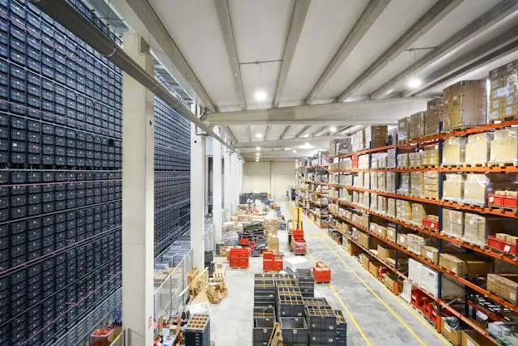

Découvrez mes domaines d'expertise et les projets réalisés pour mes clients
Optimisation des flux de distribution, gestion des approvisionnements, planification MRP/DRP.
Gestion multicanal, préparation de commandes, reverse logistics, last-mile delivery.
Supply chain réglementée, gestion du froid, traçabilité, bonnes pratiques de production et de distribution.
Expertise en pilotage et paramétrage des systèmes d'information supply chain.
Des réalisations concrètes avec des résultats mesurables
Acteur B2B des métaux spéciaux · 250 M€ de CA

L'entreprise faisait face à une couverture de stocks trop importante impactant son BFR, couplée à un taux de service client insuffisant. Suite à une étude stratégique menée par un cabinet Big5, la mise en œuvre opérationnelle restait à faire. L'objectif : réduire les stocks tout en améliorant la satisfaction client.
Une refonte complète de la gestion des stocks a été engagée, en commençant par la classification ABC/FMR du catalogue articles. Une analyse PLM croisée avec les Chefs de Marché a permis d'identifier les articles éligibles au stockage, les autres basculant en mode achat/vente direct. Un schéma logistique à deux niveaux a été défini : entrepôt central pour toutes les références, entrepôts régionaux pour les produits à forte rotation. Un plan navettes régulier a été mis en place entre le central et les 5 sites régionaux. L'omnicanalité a été activée via le WMS. Un nouveau plan transport distribution a été défini par canal client. En parallèle, un nettoyage des stocks dormants a été mené avec la Finance, et une gouvernance S&OP mensuelle instaurée avec les Chefs de Marché. Enfin, un accompagnement au changement des équipes entrepôt a permis un pilotage en adéquation charge/ressources, avec mise en place des KPIs et rituels.
Enseignement clé : Une refonte du schéma logistique couplée à une gouvernance S&OP mensuelle permet de réduire significativement le BFR tout en améliorant le taux de service.
Laboratoire Pharmaceutique Français · 480 M€ de CA
Le laboratoire pharmaceutique souhaitait externaliser la logistique et son transport à un prestataire 4PL. L'enjeu était double : moderniser le système d'information avec une interface S4/HANA - WMS, tout en maintenant la conformité réglementaire (ANSM, GDP). Mon rôle en tant que PMO a été de piloter l'appel d'offres et le déploiement opérationnel.
Un appel d'offres 4PL a été lancé sous gouvernance Comex avec un Steerco dédié. Des chantiers métiers ont été mis en place avec un Comité Projets. Une simulation budgétaire a permis de benchmarker les offres, avec intégration de critères RSE dans le choix final. En parallèle, j'ai assuré le rôle de BPO (Business Process Owner) sur les périmètres S2S (Store-to-Ship) et O2C (Order-to-Cash) pour définir les interfaces S4/HANA - WMS (Manhattan Scale) du futur prestataire. Le transfert des contrats de transport et les déménagements ont été pilotés. Un design omnicanal du layout amont/aval 4PL a été réalisé, avec une cellule qualité en mode délégation.
Enseignement clé : Une externalisation 4PL bien pilotée, avec une interface SI robuste, permet de tripler les capacités tout en maîtrisant les coûts et la conformité réglementaire.
Acteur Vins & Spiritueux bordelais · 35 M€ de CA
L'entreprise bordelaise souffrait d'une supply chain peu digitalisée, avec des process manuels et une gouvernance S&OP inexistante. Les coûts du prestataire 3PL étaient élevés et les interfaces EDI inexistantes. L'objectif était de digitaliser les opérations logistiques, fiabiliser le partenariat 3PL et instaurer une véritable gouvernance S&OP.
Un audit de la maturité digitale de la supply chain E2E a été réalisé selon la méthodologie Supply Chain Masters, avec une roadmap des chantiers. Le prestataire 3PL a été robustifié via une approche omnicanale et profitable. L'ERP SAGE100 a été monté en grade pour permettre une interface EDI avec le 3PL. Une étude puis un appel d'offres ont conduit au choix d'un outil DDMRP leader sur le marché. La gouvernance S&OP a été mise en place autour de cet outil. En parallèle, le SLA avec le prestataire 3PL a été renégocié avec pilotage via QBR. Enfin, l'omnicanalité FMCG a été déployée chez le prestataire, et une refonte du sourcing a intégré un plan de continuité d'activité (BCP).
Enseignement clé : La digitalisation et la mise en place d'une gouvernance S&OP avec un outil DDMRP améliorent la capacité de traitement et réduisent les coûts 3PL.
Discutons de vos défis logistiques et définissons ensemble une feuille de route.
« J'ai eu le plaisir de travailler avec V. Dermont chez LFB et je recommande vivement son profil. Son expérience logistique se traduit par une excellente maîtrise des flux, des priorités et de la coordination multi-interlocuteurs. Il se distingue par une rigueur opérationnelle, un sens aigu du service et une réelle capacité à sécuriser les opérations. Un professionnel fiable, orienté résultats, avec de fortes compétences en logistique et une vraie culture d'amélioration continue. »
« I had the opportunity to collaborate with Vincent Dermont for six months on a transformation project. As the Global Director of E2E Supply Chain Management and Logistics for the Group, Vincent demonstrated exceptional commitment and loyalty. Vincent effectively planned and managed the E2E supply chain through the SIOP process, working closely with our multichannel 3PL provider in Europe. His methodical approach and smooth communication were crucial to the project's success. In Europe, his leadership and dedication make him a valuable asset to any organization. I highly recommend Vincent for any future opportunities. »
« I had opportunity to work with Vincent on a special assignment, after YAGEO acquired Telemecanique, to help solve some severe operational problems, and I have really appreciated his team building ability in an uncomfortable situation of high stress and pressure. If you are looking for a strong Supply Chain professional, Vincent for sure will match your expectations. His strong sense of responsibility and problem solving ability are the valuable add-on to his undisputed technical skill. »
« Merci à Vincent pour son professionnalisme et son engagement sur notre projet de Transformation. Sa collaboration et son aide sur les processus complexes côté Supply Chain ont permis aux différents métiers concernés de prendre les bonnes décisions et d'appréhender sereinement les solutions de demain. »
« J'ai eu le plaisir de travailler avec V. Dermont chez LFB et je recommande vivement son profil. Son expérience logistique se traduit par une excellente maîtrise des flux, des priorités et de la coordination multi-interlocuteurs. Il se distingue par une rigueur opérationnelle, un sens aigu du service et une réelle capacité à sécuriser les opérations. Un professionnel fiable, orienté résultats, avec de fortes compétences en logistique et une vraie culture d'amélioration continue. »
« I had the opportunity to collaborate with Vincent Dermont for six months on a transformation project. As the Global Director of E2E Supply Chain Management and Logistics for the Group, Vincent demonstrated exceptional commitment and loyalty. Vincent effectively planned and managed the E2E supply chain through the SIOP process, working closely with our multichannel 3PL provider in Europe. His methodical approach and smooth communication were crucial to the project's success. In Europe, his leadership and dedication make him a valuable asset to any organization. I highly recommend Vincent for any future opportunities. »
« I had opportunity to work with Vincent on a special assignment, after YAGEO acquired Telemecanique, to help solve some severe operational problems, and I have really appreciated his team building ability in an uncomfortable situation of high stress and pressure. If you are looking for a strong Supply Chain professional, Vincent for sure will match your expectations. His strong sense of responsibility and problem solving ability are the valuable add-on to his undisputed technical skill. »
« Merci à Vincent pour son professionnalisme et son engagement sur notre projet de Transformation. Sa collaboration et son aide sur les processus complexes côté Supply Chain ont permis aux différents métiers concernés de prendre les bonnes décisions et d'appréhender sereinement les solutions de demain. »
« J'ai eu le plaisir de travailler avec V. Dermont chez LFB et je recommande vivement son profil. Son expérience logistique se traduit par une excellente maîtrise des flux, des priorités et de la coordination multi-interlocuteurs. Il se distingue par une rigueur opérationnelle, un sens aigu du service et une réelle capacité à sécuriser les opérations. Un professionnel fiable, orienté résultats, avec de fortes compétences en logistique et une vraie culture d'amélioration continue. »
« I had the opportunity to collaborate with Vincent Dermont for six months on a transformation project. As the Global Director of E2E Supply Chain Management and Logistics for the Group, Vincent demonstrated exceptional commitment and loyalty. Vincent effectively planned and managed the E2E supply chain through the SIOP process, working closely with our multichannel 3PL provider in Europe. His methodical approach and smooth communication were crucial to the project's success. In Europe, his leadership and dedication make him a valuable asset to any organization. I highly recommend Vincent for any future opportunities. »
« I had opportunity to work with Vincent on a special assignment, after YAGEO acquired Telemecanique, to help solve some severe operational problems, and I have really appreciated his team building ability in an uncomfortable situation of high stress and pressure. If you are looking for a strong Supply Chain professional, Vincent for sure will match your expectations. His strong sense of responsibility and problem solving ability are the valuable add-on to his undisputed technical skill. »
« Merci à Vincent pour son professionnalisme et son engagement sur notre projet de Transformation. Sa collaboration et son aide sur les processus complexes côté Supply Chain ont permis aux différents métiers concernés de prendre les bonnes décisions et d'appréhender sereinement les solutions de demain. »